4 Projections and Coordinate Reference Systems
Every map ever created is wrong.
A bold claim - but a true one! There is no way to take a spherical object like Earth and translate it to a flat object without compromising in some way.
The following video from Vox1 is a great introduction to this concept, and gives you a nice overview of common projections - different ways that people have tried to get around this problem over the years.
4.1 Projections
In summary, different projections are valuable for different reasons - but they can distort the sizes of countries quite significantly. Just how big these distortions are might surprise you…
For example, let’s look at Greenland and Africa on the world map you are probably familiar with.
This map uses the Mercator projection. Now, when our primary requirement for maps was trying to sail ships across the ocean, this map was fantastic. It allowed navigators to set a single constant bearing and get to where they needed to go, rather than constantly adjusting and risking huge errors if they made a single mistake along the way.
Actually, to be fair to the Mercator projection, it still has benefits today for navigation with things like Google maps - in fact, a special variant of the Mercator projection, known as Web Mercator (a.k.a. WGS 84 Web Mercator, WGS 84/Pseudo-Mercator, EPSG:3857) is used by almost every major web mapping service, such as Bing, OpenStreetMap, and others - so it’s worth knowing about as you’ll use it a lot when you’re making interactive maps later in the course.2
However, all versions of the Mercator projection have the rather unfortunate side effect of significantly distorting the apparent sizes of different countries.
Countries far from the equator - for example Northern Europe, Russia, the US, Canada, and the North and South Poles - appear on the map to be much bigger than they are in reality. If you don’t know it’s happening, it can be quite a surprise to learn that certain countries really aren’t as big as you might have thought!
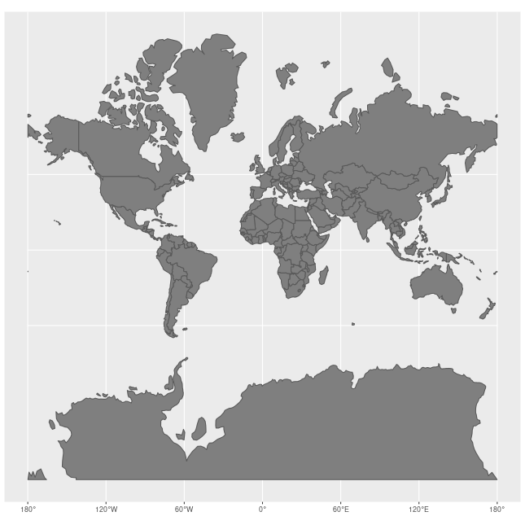
By Jakub Nowosad - Own Work;, CC BY-SA 4.0, Link3
Optional Exercise
A great way to get your head around the impact of the Mercator projection on our understanding of the world is to use the website the true size of.
Head to that website and try the following out. Do the results surprise you? Does this change your sense of our world? Click ‘clear map’ after each exercise to get back to a blank map, or right click on the coloured shape of the country to remove it - Search for Russia and drag it onto the North of Africa. - Search for the United Kingdom and drag it onto Greenland. - Search for Canada and drag it onto Brazil.
Optional Exercise
You can play around with some different projections at the metrocosm website.
You will notice that there are a large number of purple dots all over the maps on that website. Why are they there?
On a globe, all of those purple dots would be the same size. They are a good way of understanding how different projections distort the size or shape of different parts of the world.
Look at each projection.
4.2 Coordinate Reference Systems
The next thing to understand is how we divide the world up so we can all talk about it using the same language and find the same point on the map.
One of the most common ways to do this is with latitude and longitude.
4.2.1 Latitude and longitude
Latitude looks at how far a point is from the equator - you can also think of it as how close a point is to the North or South Pole.
Lines of latitude run parallel with the equator.
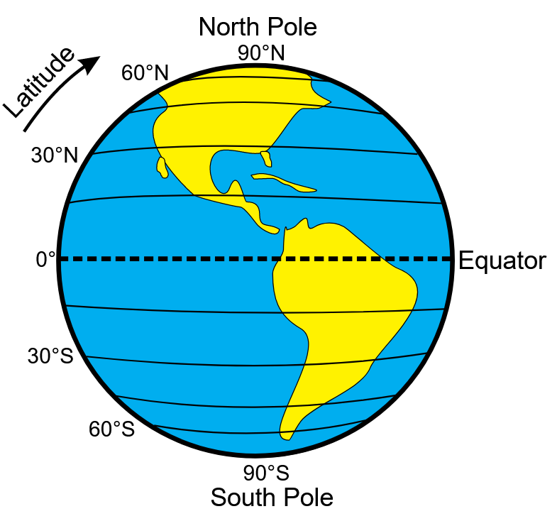4
Latitude has a value of 0 at the equator.
‘Above’ the equator - towards the North Pole - latitude gradually gets bigger, written as, for example, 70N, reaching a maximum of 90 North at the North pole.
‘Below’ the equator - towards the South Pole - latitude gradually gets bigger, but this time it is written as, for example, 45S reaching a maximum of 90 South at the South pole.
However - when you are using latitude on a computer, latitude South of the equator is often entered as a negative number instead.
Longitude is the horizontal distance of a point away from the prime Meridian - a particular line that runs from the North Pole to the South Pole through Greenwich, London.
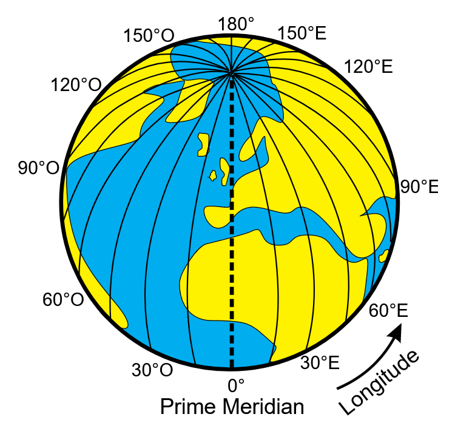5
Longitude has a value of 0 at the Prime Meridian (Greenwich).
East of the Prime Meridian, longitude gradually gets bigger and is written as, for example, 60E, reaching a maximum of 180 on directly the opposite side of Earth.
West of the Prime Meridian, longitude gradually gets bigger but this time it is written as, for example, 30W, reaching a maximum of 180 on directly the opposite side of Earth.
However - when you are using longitude on a computer, a longitude to the West of Greenwich is often entered as a negative number instead.
The image below gives you a quick reference to how different points may be written.
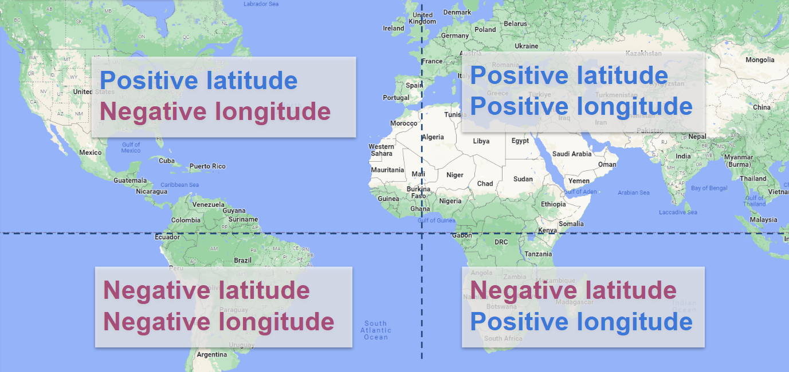
4.2.1.1 Writing coordinate pairs
Any point in the world can be identified by providing a figure for both latitude and longitude.
However - it’s important to write them in the correct order, else you will end up somewhere very different!
Now, just to be confusing… it’s the opposite way around to a standard graph.
If you cast your mind back to school, you might remember being taught about writing a coordinate pair for a standard graph.
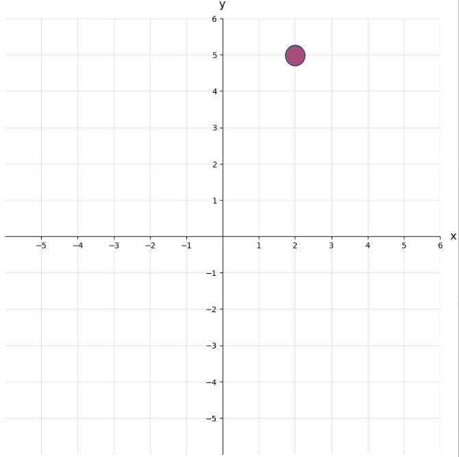
When we write this, we write the position of the horizontal point (x) first, and then the vertical (y) point - so we write coordinates as (x, y). So for the graph above, this means the coordinates are (2, 5). You might have been taught to remember this as going ‘along the corridor, then up the stairs’.
Now… it’s the opposite for latitude and longitude!
Let’s say we have a latitude (the position vertically in relation to the equator - sort of equivalent to our y value above) of 7, and a longitude (the position horizontally in relation to the prime meridian - sort of equivalent to our x value above) of 15.
We’d write this as (7, 15) - not (15, 7) as you might have expected!
So just remember - it’s the opposite order to a graph!
4.2.1.2 How do lines of latitude and longitude appear on different projections?
Mercator Projection
As it’s the projection you’re still going to commonly see (and probably use for most of the maps you create), let’s go back to the Mercator map projection.
The lines of latitude and longitude are the white grid that’s overlaid on the map, with the horizontal red line being the equator. Notice that all of the lines are totally straight!

All of the lines of longitude (running top to bottom) are parallel to each other - that is they stay the same distance apart the whole time.
All of the lines of latitude (running left to right) are also parallel to each other.
The lines of latitude and longitude are at perfect right angles (also known as perpendicular) to each other.
Here, each horizontal line represents a distance of 15 degrees north or south.
However - if you look at the top of the map, you will notice that the lines get further and further apart - even though the gaps still represent 15 degrees.
Remember what we said before about the Mercator projection making countries further from the equator appear bigger than they are? Well this is it in action!
Gall-Peters Projection
In the Gall-Peters projection, the sizes of each rectangle made by the latitude and longitude lines are quite different to the Mercator proejction.
The rectangles are tall near the equator and get shorter as you go towards the North and South Poles.

However, like the Mercator projection, the lines of latitude are parallel to each other, and the same is true of the lines of longitude.
This means that the map can still be used to navigate with a constant bearing - unlike a projection where these lines are curved.
Gall-Peters maps are UNESCOs preferred map, and are quite common in UK schools.6
Winkel Tripel
Finally, let’s look at the lines on the Winkel tripel projection.
Nowadays, it’s generally agreed that the Winkel Tripel is a projection that provides a nice balance between not distorting the countries further from the equator too much while also ensuring the shapes of each country are not distorted. It’s used in a lot of textbooks and it’s the preferred projection for world maps made by the National Geographic Society.7
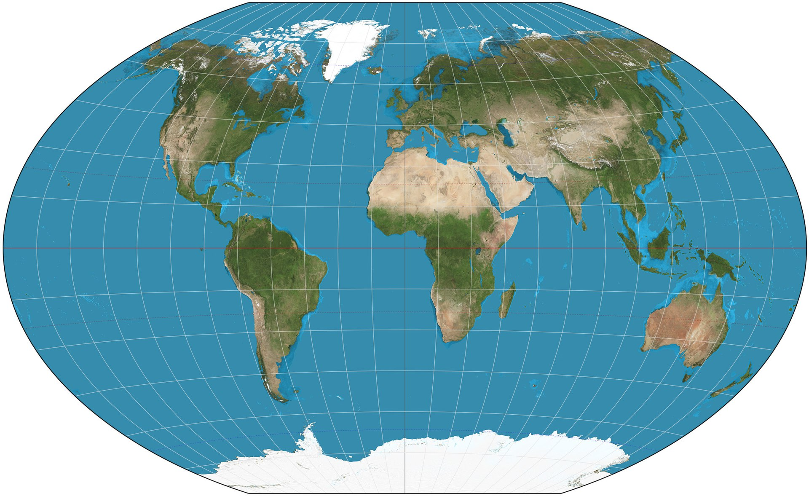
But notice that the lines of latitude and longitude are no longer straight!
4.2.1.3 Exercise: Getting Comfortable with Latitude and Longitude
It’s helpful to get a bit of a feeling for how latitude and longitude is written, as you’ll be dealing with it quite a lot in the datasets we will use later in this book.
So let’s work through a couple of questions.
In each of the questions below - the dotted line running vertically (from the top to the bottom of the image) is the prime meridian - the line that runs through Greenwich in London, England and is a longitude of 0. - the dotted line running horizontally (from the left to the right of the image) is the equator - the line that is a latitude of 0.
Question 1
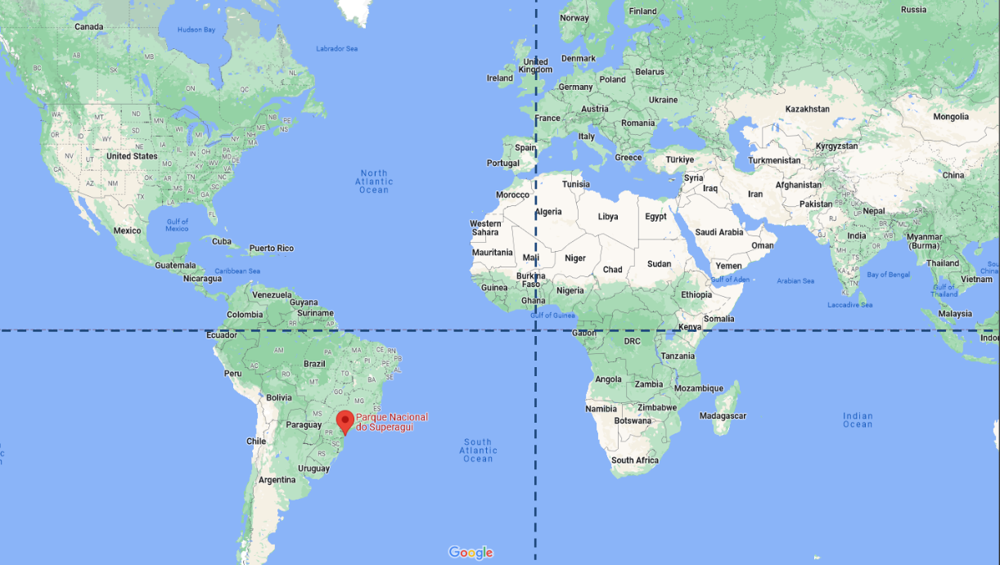
Question 2
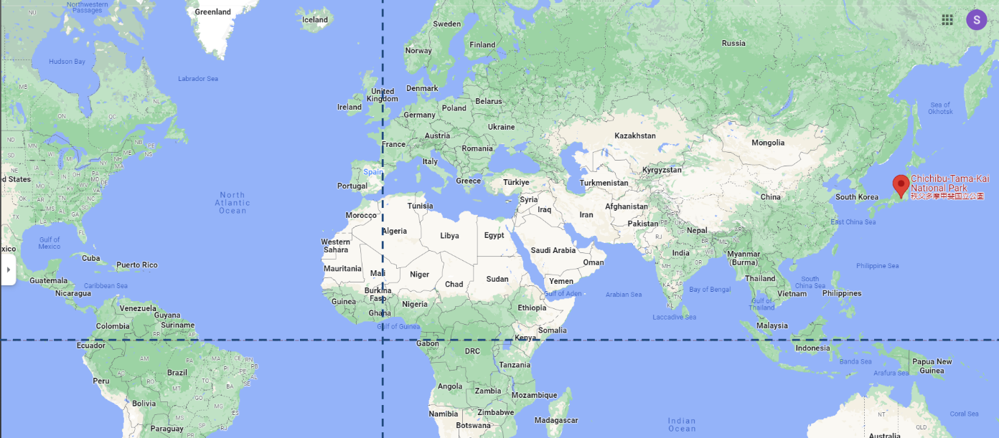
Question 3
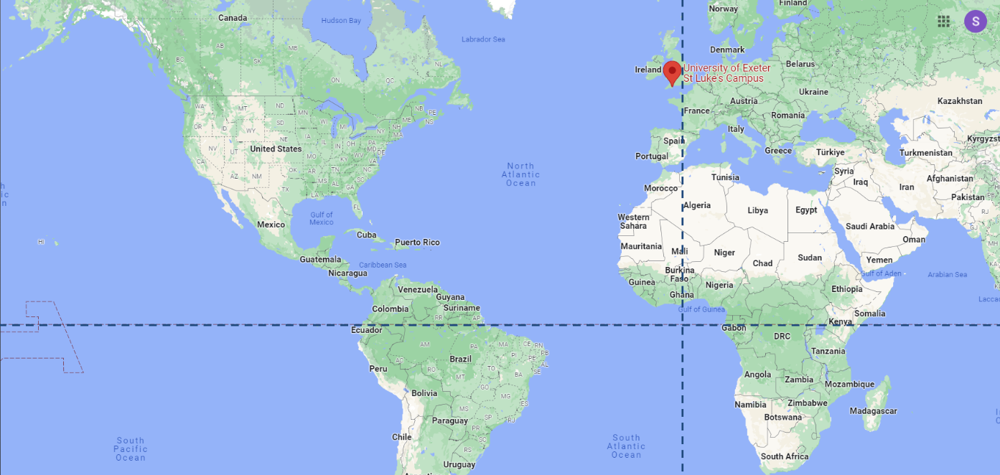
St Luke’s is part of the University of Exeter and is home to the PenCHORD team, who write the HSMA course!
4.3 What coordinate reference systems are in use in the UK?
The UK government provides the following guidelines on the usage of coordinate reference systems:
- use British or Irish National Grid for data related to the UK and Northern Ireland
- use ETRS89 (EPSG::4258) for Europe
- use WGS84 for worldwide geographic location points
You can also combine these standards and/or add other CRS to meet your organisation’s requirements, for example, when you need greater accuracy for precision engineering decisions.
4.3.1 The British National Grid
Given the government’s recommendation to use the BNG - which is also sometimes referred to as the Ordnance Survey National Grid reference system (OSBG) - you may come across datasets which make use of it, so it’s worth knowing how it works!
Rather than latitude and longitude, BNG uses Northings and Eastings.
Northing sand Estings will be given as a series of digits without decimal places.
For example, the location of the St Luke’s University campus (the home of HSMA!) using the BNG is 29297, 92456
In this, the Easting is 29297 and the Northing is 92456.
It’s important to note that we give the Easting (the across) first, and the Northing (the up) second.
This is the opposite of using latitude and longitude!
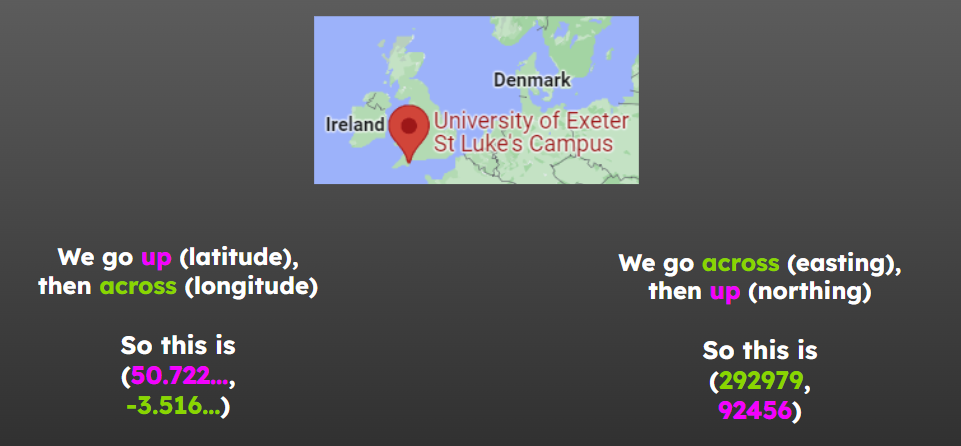
4.4 What other ways do we determine areas within the UK?
4.4.1 Postcodes
Postcodes are a well-known way of splitting the UK up.
Postcodes can be used at several different levels of resolution.
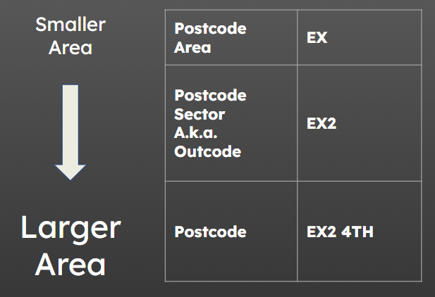
Postcode areas are often quite large, sometimes spanning whole counties.
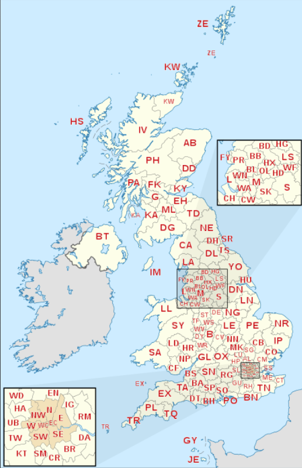^https://upload.wikimedia.org/wikipedia/commons/thumb/f/fe/British_postcode_areas_map.svg/450px-British_postcode_areas_map.svg.png
In contrast, a single exact postcode may only cover a handful of houses, so they are often not used when analysing healthcare data as there is too much of a risk of being able to identify an individual patient from their postcode.
There are a lot of valid formats for postcodes, so they are not always the easiest to validate!
You may also find that they are input into software with a mixture of gaps between the first and second half (known as the outward code and inward code), so you may need to clean and standardise them before joining them to other datasets.
postcodes.io is a great website for getting up-to-date information about postcodes and using this to supplement your data.
For example, you can find out which LSOA - a grouping we will talk about shortly - a postcode belongs to, which can help with aggregating your data for a different level of detail.
4.4.2 Output Areas
Output Areas (OA), Lower Layer Super Output Areas (LSOA) and Middle Layer Super Output Areas (MSOA) are standardised geographical units that differ in area but have a roughly similar number of people living in each one.
 ^ https://ocsi.uk/2019/03/18/lsoas-leps-and-lookups-a-beginners-guide-to-statistical-geographies/, https://www.ons.gov.uk/methodology/geography/ukgeographies/censusgeographies/census2021
^ https://ocsi.uk/2019/03/18/lsoas-leps-and-lookups-a-beginners-guide-to-statistical-geographies/, https://www.ons.gov.uk/methodology/geography/ukgeographies/censusgeographies/census2021
4.4.2.1 OA
Output Areas (OA) are very small, with an average of circa 300 people per area.
They are so small that you will probably not work with them very often.
4.4.2.2 LSOA
Lower Layer Super Output Areas (LSOA) are the medium size of area, with around 1500 people per LSOA.
4.4.2.3 MSOA
Lower Layer Super Output Areas (LSOA) are the largest size of area, with around 8000 people per MSOA.
The map below shows MSOA boundaries (in red) overlaid over the LSOA boundaries (in blue).
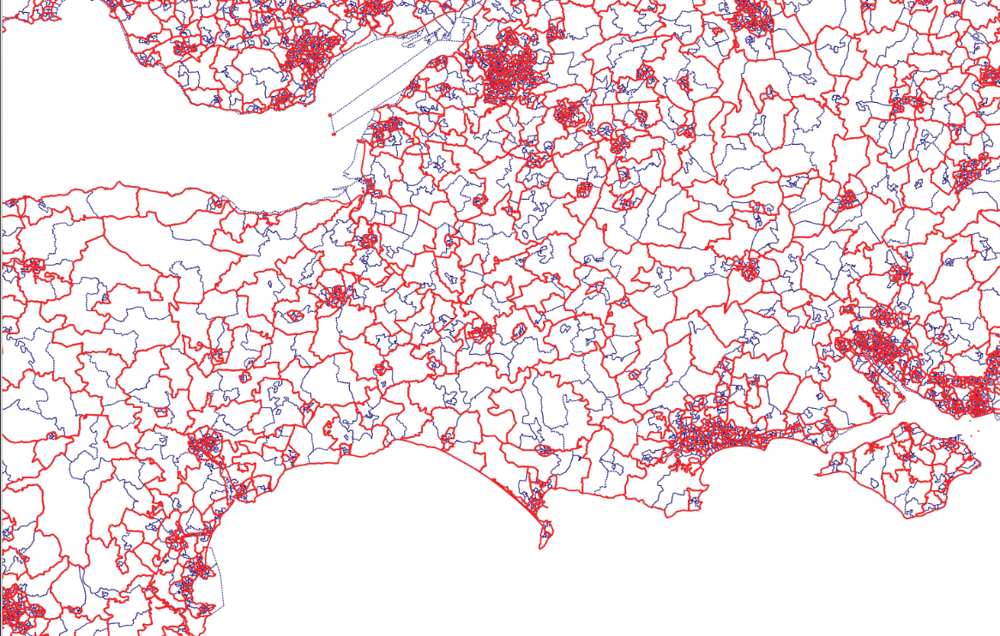
Zooming in on a single MSOA, outlined in red, we can see that there are, in this case, four LSOAs within it - though this will not be exactly the same for each MSOA.
You can also wee here that one of the LSOAs is much larger than the other three, suggesting it is likely to be less densely populated.
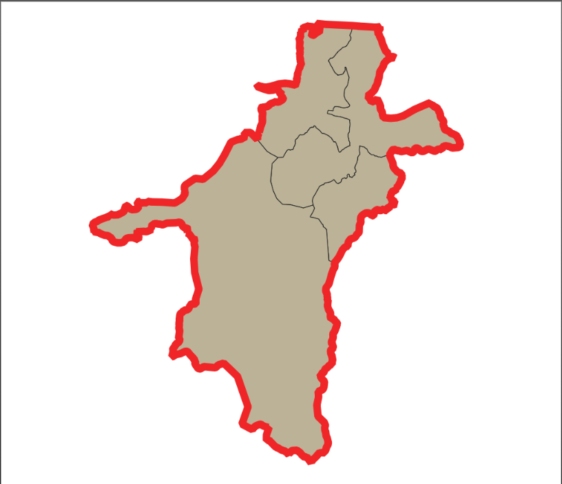
Click here to view an interactive map of MSOAs without leaving the book!
4.4.3 Issues when working with output areas
Despite being somewhat standardised, there can still be very significant differences between areas in terms of the number of people living in them or the total land area covered.
You should always carefully consider whether you need to standardise the data in some way to account for this variation.
You can read more about this process in a later chapter.
It’s also worth paying attention to which year of output areas you are working with.
A lot of older data will use 2011 boundaries, but the boundaries were refreshed in 2021. If trying to join older data to a newer file of boundaries, or vice-versa, you may find that some areas appear to be missing - so check the dates!
4.4.4 Other groupings
4.4.4.2 Healthcare Regions
Healthcare regions in the UK frequently change.
<1996: Regional Health Authorities
1996-2002: Health Authorities
2002-2013: Strategic health authorities + primary care trusts
2013-2022: CCGs
2022-now (February 2024): Integrated care systems (integrated care board plus integrated care partnership)
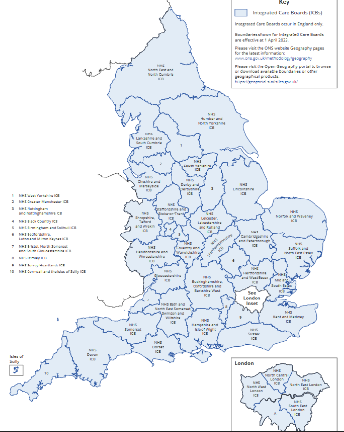^https://geoportal.statistics.gov.uk/documents/ons::integrated-care-boards-april-2023-map-in-england/explore
4.4.4.3 Ambulance Trusts
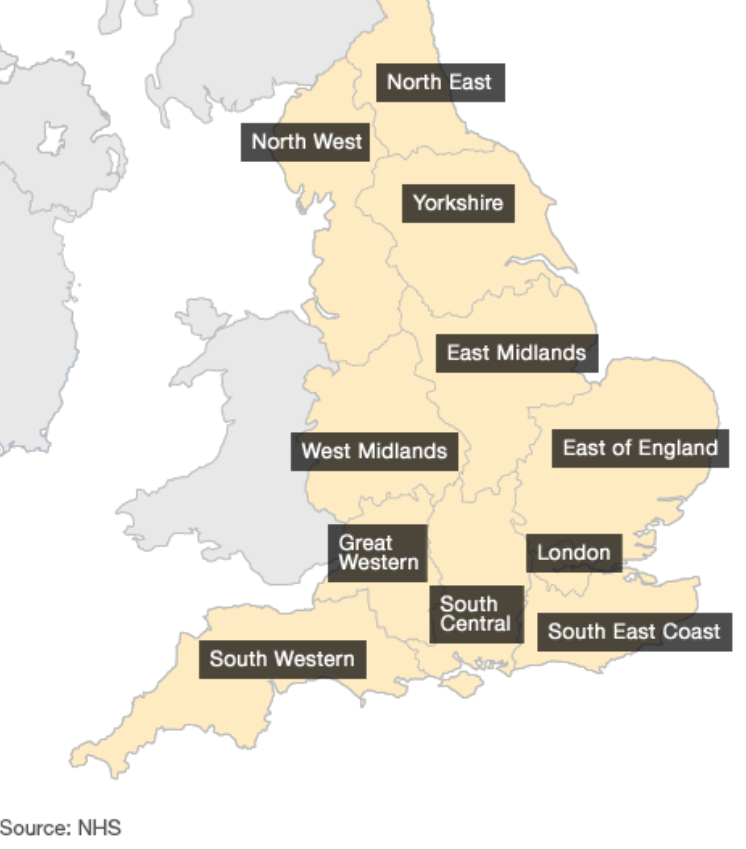^https://www.bbc.co.uk/news/health-16052725
4.4.4.4 Police Forces
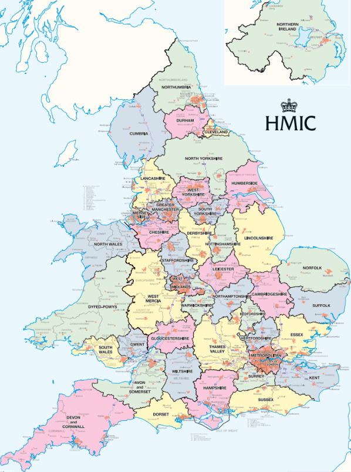^https://assets-hmicfrs.justiceinspectorates.gov.uk/uploads/police-force-map.pdf
5 References and Further Reading
5.1 Further Reading
5.1.1 Understanding the size of countries
5.1.2 Projections
5.1.3 Coordinate Reference Systems
6 References
Video Credit - Vox, Terms of Licence Use↩︎
https://en.wikipedia.org/wiki/Web_Mercator_projection↩︎
By Jakub Nowosad - Own work, CC BY-SA 4.0, https://commons.wikimedia.org/w/index.php?curid=73955926↩︎
Higgins, Hannah B. The Grid Book. Cambridge, Massachusetts: MIT Press, 2009. ISBN 9780262512404 p.94. “Embroiled in controversy from the start, the map is nonetheless widely used in the British school system and is promoted by the United Nations Educational and Scientific Cultural Organization (UNESCO) because of its ability to communicate visually the actual relative sizes of the various regions of the planet.”, via Wikipedia - https://en.wikipedia.org/wiki/Gall%E2%80%93Peters_projection↩︎
https://en.wikipedia.org/wiki/Winkel_tripel_projection↩︎
{kind=link}